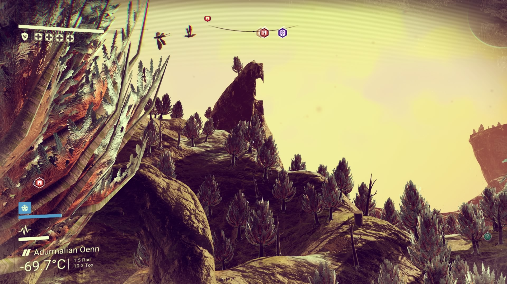
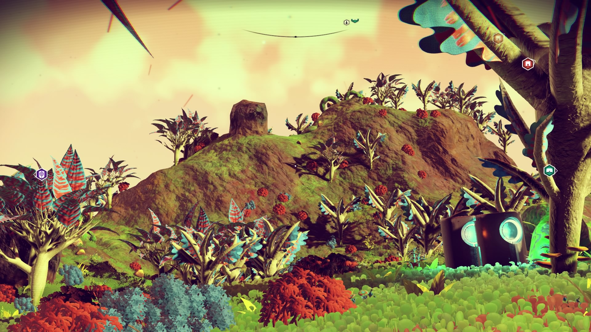
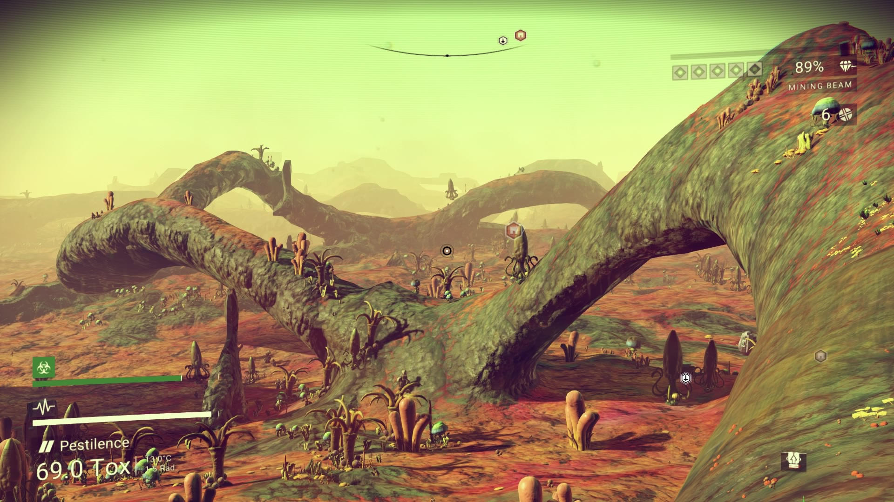
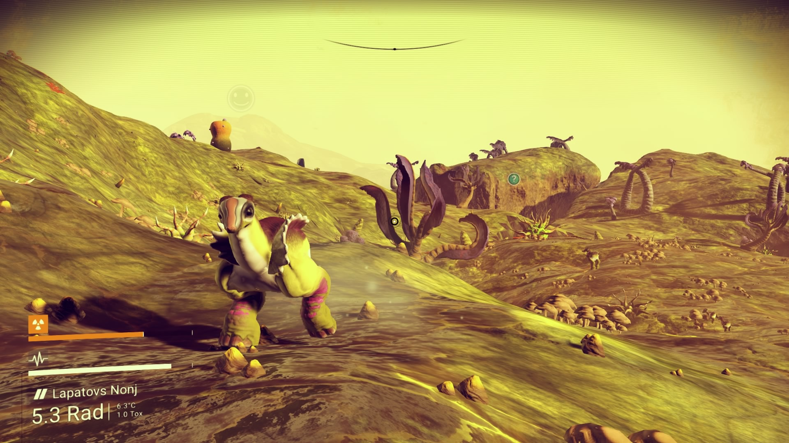
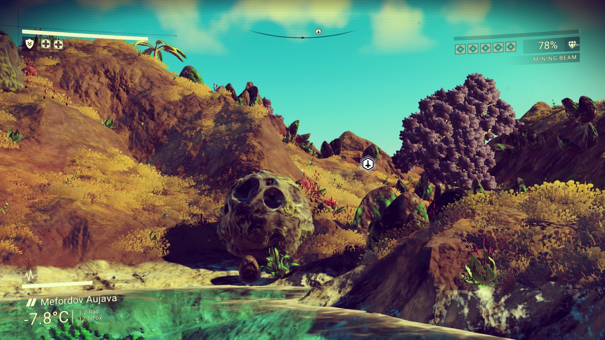

planets
Adurmalian Oenn
A hostile and cold planet with beautiful trees, rectangular mountains, and diverse fauna.

Kolaskrarl Lubi
A hostile and cold planet with beautiful trees, rectangular mountains and diverse fauna.

Jade Wave
This is probably the most beautiful planet I’ve encountered yet. Originally called Mileragn-Lonin, the way the wind shimmers and ripples across the fields of grass is truly breathtaking. Hence the name I finally chose for it.

Pestilence
Pestilence was one of the first planets I spent a fair amount of time on, and the first one I gave my own name to. I chose it based on the strongly toxic atmosphere and precipitation.

Lapatovs Nonj

Mefordov Aujava
Another striking planet from the first day.

First Planet: Usarbu-Popeli Ajiegel
My first planet was Usarbu-Popeli Ajiegel.
Needless to say, it was breathtaking and my mind was appropriately blown.